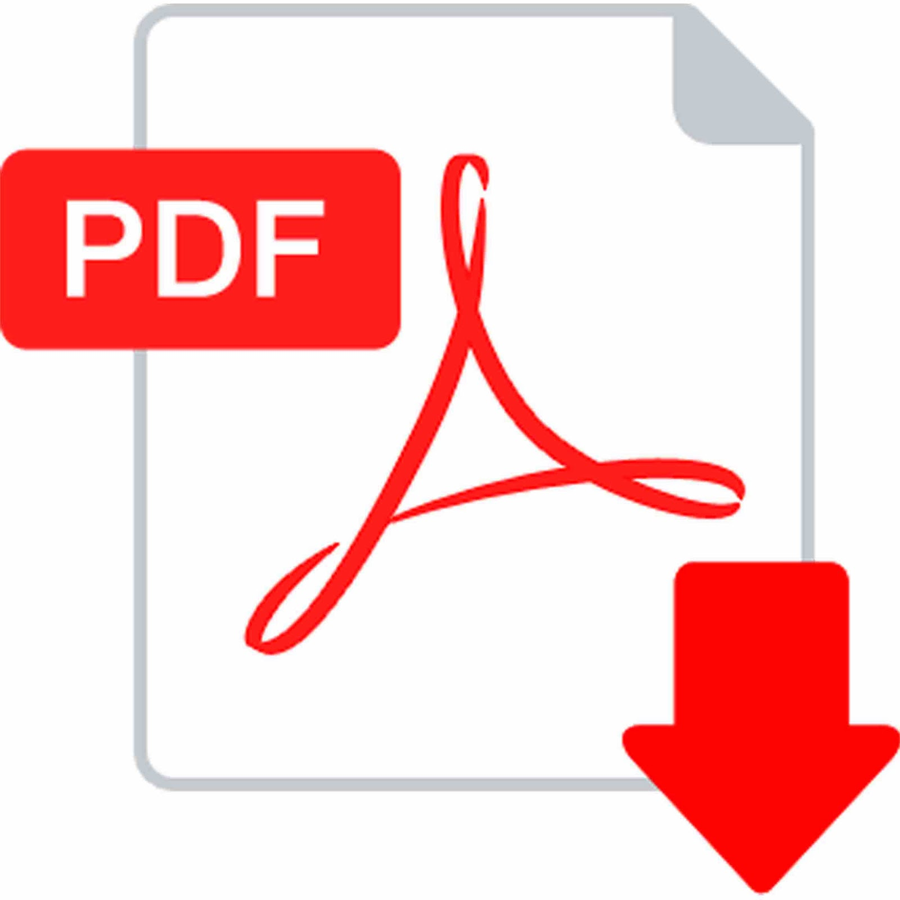

LECTURAS
deben ser mínimo cinco (5) Lecturas, las cuales serán accedidas como elementos de sub-ítems de menú de esta sección en páginas web o secciones diferentes.
En estas se presentarán contenidos para lectura de autoría del grupo sobre la temática que han escogido para la construcción del sitio web del OVI. Estos contenidos deben contar con imágenes de apoyo, las cuales deben estar debidamente citadas tanto para las lecturas como para las imágenes que use el grupo para construir sus contenidos de lectura para el sitio, recuerde que debe usar citas acordes con la Norma APA 6 edición.
En los siguientes links encontrará CINCO documentos PDF con información sobre las ovas de diseño WWB.

Implementacion de un objeti virtual de aprendizaje
Todo lo que necesitas saber de Git
Diseño multiproposito usuario
Diseño interfaces